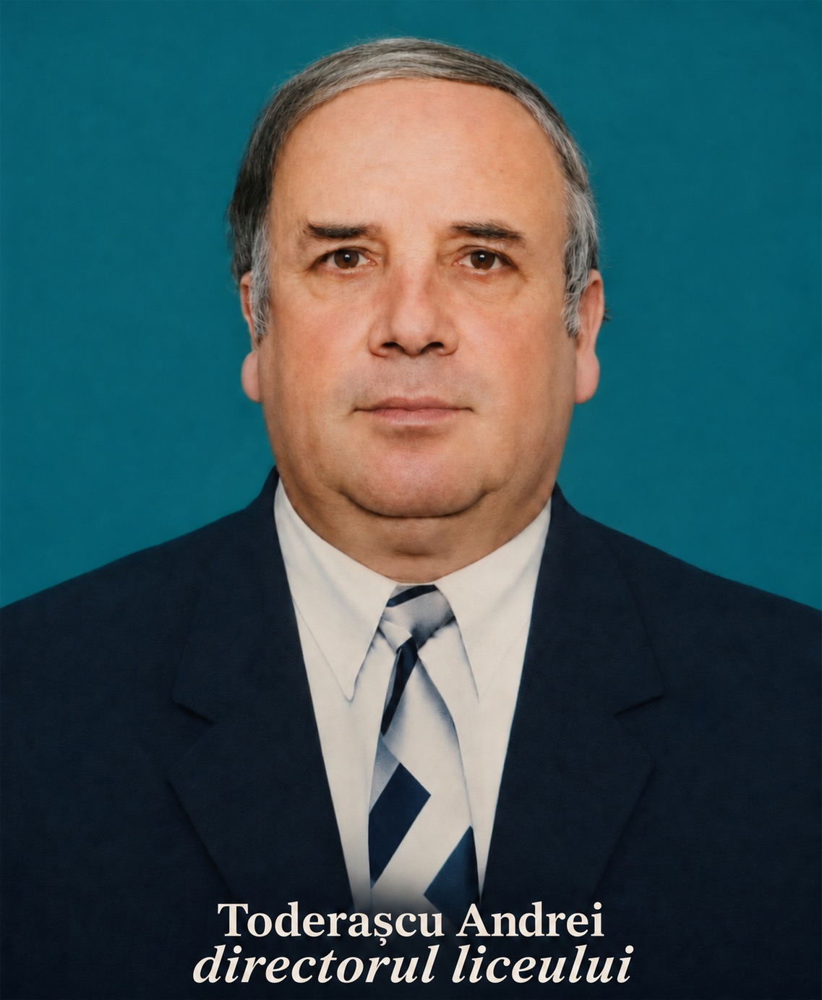
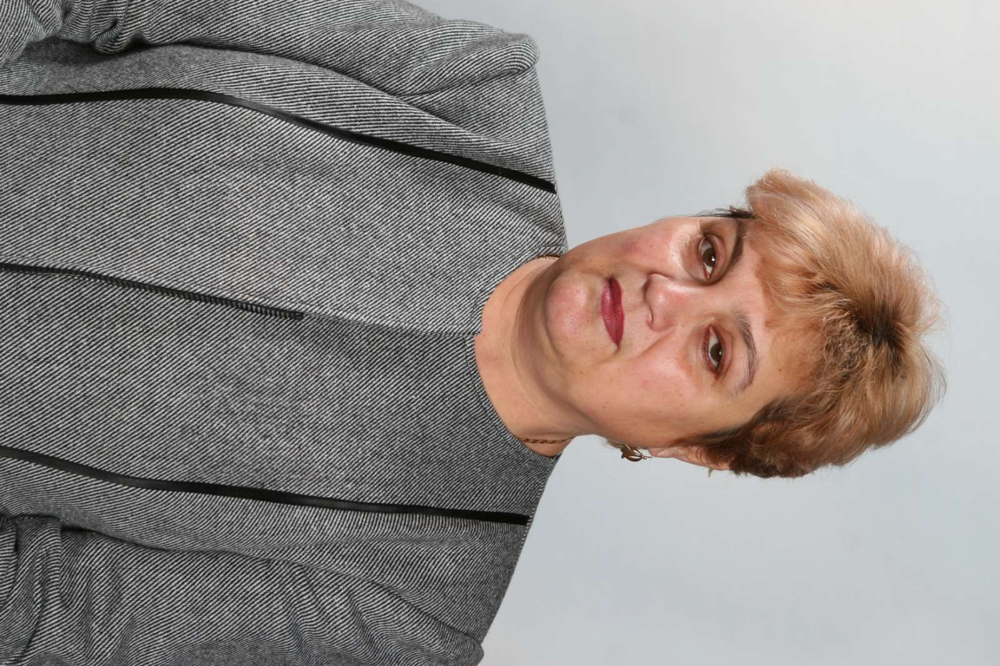

Prolog
"Descrierea Moldovei"
Descrierea Liceului

Câte cărți are biblioteca liceului nostru? Atâtea câte destine au trecut pragul lui.
Fiecare om este o carte, fiecare generație — un capitol, iar fiecare destin — o poveste care merită citită. Din aceste povești s-a născut biblioteca noastră vie: o bibliotecă a oamenilor, a amintirilor și a visurilor.
Anul 1991 a însemnat două începuturi. O țară și-a declarat independența și și-a ales propriul drum. O școală și-a deschis ușile și a pornit să formeze generațiile care aveau să construiască viitorul. De atunci, istoriile Republicii Moldova și ale Liceului Teoretic „Alexei Mateevici” din Căușeni au mers înainte, fiecare cu drumul și încercările sale, dar unite de aceeași speranță.
 O țară își hotărăște viitorul. O școală formează oamenii care îl construiesc. Prin educație, tinerii învață să gândească liber, să aleagă responsabil și să apere valorile unei societăți democratice.
În cei 35 de ani, fiecare elev a adăugat o filă la povestea liceului, fiecare profesor a lăsat o lumină, iar fiecare generație a dus mai departe ceea ce a primit. Cartea aceasta nu se închide odată cu aceste pagini. Ea rămâne deschisă și va fi completată de generațiile care vin, așa cum și istoria țării se scrie mai departe, prin oamenii și alegerile fiecărei generații.
Astăzi, deschidem câteva dintre paginile ei. Cu recunoștință pentru cei care au început acest drum, cu drag pentru toți cei care l-au parcurs și cu încredere în cei care îl vor continua.
Două istorii. Aceeași vârstă. Un viitor pe care îl scriem împreună.
Vă invităm să deschideți, rând pe rând, capitolele acestei biblioteci vii — pagini în care se întâlnesc istoria liceului, amintirile și destinele celor care i-au trecut pragul.
O țară își hotărăște viitorul. O școală formează oamenii care îl construiesc. Prin educație, tinerii învață să gândească liber, să aleagă responsabil și să apere valorile unei societăți democratice.
În cei 35 de ani, fiecare elev a adăugat o filă la povestea liceului, fiecare profesor a lăsat o lumină, iar fiecare generație a dus mai departe ceea ce a primit. Cartea aceasta nu se închide odată cu aceste pagini. Ea rămâne deschisă și va fi completată de generațiile care vin, așa cum și istoria țării se scrie mai departe, prin oamenii și alegerile fiecărei generații.
Astăzi, deschidem câteva dintre paginile ei. Cu recunoștință pentru cei care au început acest drum, cu drag pentru toți cei care l-au parcurs și cu încredere în cei care îl vor continua.
Două istorii. Aceeași vârstă. Un viitor pe care îl scriem împreună.
Vă invităm să deschideți, rând pe rând, capitolele acestei biblioteci vii — pagini în care se întâlnesc istoria liceului, amintirile și destinele celor care i-au trecut pragul.
„La început de drum”

Un vis devenit realitate
Povestea fondării Liceului Teoretic „Alexei Mateevici” din Căușeni
1991–2026 | 35 de ani de istorie
Din amintirile mele – Andrei Toderașcu, fondatorul și primul director al liceului
Anul 1991 – anul speranțelor și al marilor provocări
Anul 1991 a fost un an al responsabilităților, provocărilor, așteptărilor și speranțelor, dar și al dezamăgirilor. A fost o perioadă a marilor schimbări, în care fiecare dintre noi simțea că trebuie să contribuie la construirea unui viitor mai bun.
În primăvara acelui an, am avut ocazia să particip, împreună cu un grup de aproximativ 40 de directori de școli, grădinițe și profesori de limba română, la o vizită de studiu de trei zile în orașul Galați, România.
Am mers acolo pentru a cunoaște experiența colegilor noștri de peste Prut. Ceea ce am văzut, în special la Liceul „Vasile Alecsandri” din Galați, m-a impresionat profund. Am descoperit un model de organizare a învățământului care mi-a întărit convingerea că și elevii noștri merită asemenea oportunități.
M-am întors acasă cu un gând care nu-mi mai dădea pace: să înființăm un liceu la Căușeni, un liceu pentru copiii din întregul raion.
Nu doream doar o instituție nouă, ci un loc în care elevii să beneficieze de o pregătire temeinică, de profesori dedicați și de condiții corespunzătoare pentru studii.
Pentru a înțelege mai bine cum poate fi realizat un asemenea proiect, am vizitat liceele nou-înființate din Leova și Chișinău. Am discutat cu oamenii care aveau deja experiența organizării unor astfel de instituții și am încercat să învăț din realizările și dificultățile lor.
Cu fiecare vizită, convingerea mea devenea mai puternică: și la Căușeni trebuia să existe un liceu.
O clădire pentru un vis
Primul pas concret a fost identificarea unui sediu.
Mi-am îndreptat atenția spre clădirea Comitetului Raional de Partid, în care funcționează și astăzi liceul. Era o clădire potrivită, dar obținerea ei părea, la început, aproape imposibilă.
Acolo își desfășurau activitatea mai multe instituții și organizații. Unele spații erau ocupate de Direcția Cultură, altele de Comitetul Raional de Partid, iar o parte fuseseră oferite în arendă.
Nu puteam însă renunța la această idee.
M-am adresat președintelui raionului, domnul Nicolae Coroi, care a înțeles importanța inițiativei. Împreună am mers la Ministerul Educației, unde am fost primiți de ministrul Nicolae Mătcaș.
I-am prezentat dorința noastră de a fonda liceul și am propus identificarea unor resurse financiare din fondurile destinate unor construcții de instituții educaționale care fuseseră sistate.
Domnul ministru ne-a ascultat și a susținut inițiativa. A convocat reprezentanții conducerii ministerului și le-a cerut să ne acorde sprijin pentru întemeierea liceului și crearea condițiilor necesare.
În cele din urmă, am reușit să obținem finanțarea necesară.
Au urmat negocierile pentru schimbul de clădiri. Imobilele au fost evaluate, s-au stabilit condițiile, iar schimbul a fost realizat. Clădirea cedată în schimb a devenit ulterior Casa de Creație a Copiilor și Adolescenților.
Pentru mine, aceasta a fost prima mare victorie.
Aveam clădirea. Dar, pentru ca ea să devină liceu, abia atunci începea adevărata muncă.
Primii pași și oamenii care au fost alături de mine
Ministrul Nicolae Mătcaș mi-a acordat posibilitatea să îndeplinesc, pentru o perioadă, două funcții concomitent: cea de șef al Direcției de Învățământ și cea de director al noului liceu, până la organizarea activității normale a instituției.
Am acceptat această responsabilitate, fiind conștient că aveam în față o muncă enormă.
A trebuit să eliberăm spațiile ocupate de alte instituții, să reorganizăm clădirea și să transformăm fostele birouri administrative în săli de clasă. În unele cazuri, din două birouri amenajam o singură sală.
Trebuia să găsim mobilier, materiale didactice și tot ceea ce era necesar pentru desfășurarea lecțiilor.
Dar cel mai important era să formăm un colectiv profesoral puternic.
Am avut posibilitatea să selectez cadre didactice din diferite instituții de învățământ ale orașului și raionului. Îmi doream profesori bine pregătiți, responsabili și dispuși să participe la construirea unei instituții noi.
Îmi amintesc cu respect de primii colegi care au venit alături de mine: Alexandru Chițcănean, Serafima David, Irina Baltă, Tamara Untu, Ion Boico, Natalia Bahchivanji, Zinaida Voloșciuc, Ion Găină, Grigore Opațchi, Nicolae Balaban, Maria Rusu, Eugenia Șarov, Rita Godoroja, Maria Vasluian, George Boleac, Vasile Eni, Maria Ciornobai, Ala Antonov, Domnica Andreeva, Maria Bucuci, Galina Bragarenco, Emilian Condriuc, Georghe Ursu, Nina Bragari, Ecaterina Ceban și alții.
Fiecare dintre acești oameni și-a adus contribuția la organizarea și dezvoltarea liceului.
Nu aveam tot ce ne trebuia, dar aveam dorința de a reuși.
Și, uneori, tocmai această dorință ne ajuta să găsim soluții acolo unde părea că nu există.
Primii elevi – confirmarea că efortul nostru avea rost
De la bun început, mi-am dorit ca liceul să fie destinat nu doar copiilor din orașul Căușeni, ci tuturor elevilor din raion.
Am anunțat concursul de admitere și am început să informăm școlile despre noua instituție.
Îmi amintesc un episod care mi-a rămas deosebit de drag.
În ajunul zilei de 1 septembrie, am mers împreună cu viceministrul Educației, domnul Oleg Bujor, în satul Popiasca.
Am intrat și în școala medie, unde colectivul profesoral repeta cântecele pentru sărbătoarea de 31 august, Ziua Limbii Române.
Domnul Bujor m-a prezentat profesorilor, iar aceștia au început să mă întrebe despre liceul pe care îl organizam la Căușeni.
Le-am povestit despre intențiile noastre, despre condițiile pe care doream să le creăm și despre posibilitățile pe care noua instituție urma să le ofere elevilor.
Rezultatul m-a impresionat.
La 1 septembrie, școala din Popiasca practic nu mai avea clasa a X-a. Majoritatea elevilor hotărâseră să vină la liceul nostru.
Pentru mine, aceasta a fost una dintre cele mai frumoase confirmări că ceea ce începuserăm era necesar.
Dar, odată cu venirea elevilor din sate, a apărut o problemă serioasă: unde aveau să locuiască acești copii?
Căminul – o casă pentru elevii veniți din sate
La început, am fost nevoiți să cazăm elevii în spațiile liceului și ale Casei de Creație.
Era o soluție temporară. Înțelegeam foarte bine că, dacă doream un liceu pentru întregul raion, trebuia să le oferim copiilor din alte localități condiții decente de trai.
M-am adresat din nou domnului Nicolae Coroi, președintele raionului, și i-am explicat situația.
Cu sprijinul său, am început demersurile pentru obținerea unui cămin de la una dintre întreprinderile locale.
Clădirea putea fi cedată, dar trebuia cumpărată.
Am mers din nou la Guvern, unde am solicitat sprijin financiar.
Ni s-au alocat 400.000 de ruble. Din această sumă, 238.000 de ruble au fost utilizate pentru achiziționarea căminului, iar restul banilor i-am folosit pentru reparații, inclusiv pentru lucrările la acoperiș.
A fost încă un pas important.
Acum, elevii din sate aveau unde locui, iar părinții puteau avea mai multă încredere că își trimit copiii într-o instituție care se preocupă nu doar de instruirea lor, ci și de condițiile de trai.
Cantina – grija pentru fiecare copil
După rezolvarea problemei cazării, trebuia să organizăm alimentația elevilor.
La început, copiii luau masa într-o unitate de alimentație de peste drum. Dar prețurile erau prea mari pentru posibilitățile noastre.
Am început să caut o soluție.
M-am adresat din nou domnului Nicolae Coroi, care ne-a ajutat să purtăm discuții cu reprezentanții instituțiilor responsabile.
În apropiere exista o cantină cunoscută sub numele de „Cafeneaua Tinereții”.
După mai multe negocieri, domnul Vladimir Crivolapov a acceptat să ne cedeze spațiul, inclusiv utilajele existente.
Îmi amintesc și astăzi ideea exprimată atunci: pentru copii nu trebuie să ne pară rău de ceea ce putem oferi.
Această atitudine m-a impresionat.
Am reușit astfel să organizăm cantina liceului.
Elevii din sate beneficiau gratis de trei mese pe zi, iar cei din oraș de o masă.
În acei ani, programul de studii era foarte încărcat. Învățam șase zile pe săptămână, cu aproximativ 42–44 de ore de studii.
De aceea, alimentația și condițiile de trai erau la fel de importante ca organizarea procesului educațional.
Sala sportivă – construită prin muncă și colaborare
Aveam deja clădirea liceului, căminul și cantina.
Dar mai lipsea ceva foarte important: sala sportivă.
În acea perioadă, resursele financiare erau extrem de limitate. Nu era simplu să începi o construcție, mai ales una destinată unei instituții noi.
Am căutat sprijin acolo unde puteam.
Un ajutor important l-am primit din partea domnului Ion Cojocaru, deputat în Parlament și semnatar al Declarației de Independență.
Cu sprijinul său și al gospodăriei agricole, am reușit să amenajăm teritoriul și să construim gardul liceului, care există și astăzi.
O mare parte dintre brazii plantați atunci s-au păstrat până în prezent.
Pentru construirea sălii sportive, am apelat la conducătorii întreprinderilor locale.
Îmi amintesc colaborarea cu domnul Valeriu Popa, directorul fabricii de conserve, și cu reprezentanții fabricii de ceramică.
În acei ani, multe probleme economice se rezolvau prin schimburi de produse și achitări reciproce.
Au fost expediate conserve în Rusia, de unde s-a adus cărbune. Cărbunele a fost utilizat pentru obținerea cărămizii, iar astfel am reușit să acumulăm materialele necesare construcției.
La un moment dat, teritoriul liceului era plin de cărămidă.
Am procurat și alte materiale, am obținut sprijinul gospodăriilor și întreprinderilor locale și am început lucrările.
Poate că sala sportivă ar fi trebuit să fie mai mare. Poate că, în alte condiții, am fi construit-o altfel.
Dar atunci am făcut ceea ce era posibil, cu resursele pe care le aveam.
Pentru mine, important era ca elevii să aibă o sală în care să poată practica sportul și să se dezvolte armonios.
Privind în urmă, sunt recunoscător tuturor celor care au contribuit la realizarea acestei construcții și celor care, de-a lungul anilor, au continuat să o modernizeze.
Rezultatele care ne-au răsplătit eforturile
Anii au trecut, iar liceul s-a dezvoltat.
Au venit noi generații de elevi, noi profesori și noi provocări.
Privind în urmă, pot spune cu satisfacție că munca depusă la început nu a fost în zadar
Am fost și rămân mulțumit de activitatea colectivului profesoral al Liceului „Alexei Mateevici” și a Direcției Raionale de Învățământ.
Această instituție a avut un rol important în dezvoltarea învățământului din raionul Căușeni, în obținerea unor rezultate remarcabile la nivel republican și, mai ales, în formarea și educarea generațiilor de tineri care i-au trecut pragul, contribuind la dezvoltarea lor intelectuală, personală și profesională.
Îmi amintesc cu mândrie rezultatele obținute de raionul nostru în evaluările sistemului educațional:
- În anul 2005 – locul IV la nivel republican;
- În anul 2006 – locul III la nivel republican;
- În anul 2007 – locul II la nivel republican.
Aceste rezultate nu au fost meritul unui singur om.
Ele au fost posibile datorită muncii profesorilor, responsabilității conducătorilor de instituții, sprijinului Consiliului Raional și bunei colaborări cu Direcția de Învățământ.
Am considerat întotdeauna că succesul în educație se construiește prin efort comun.
Visuri care au rămas și proiecte care trebuie continuate
Desigur, nu toate lucrurile pe care mi le-am dorit pentru liceu au putut fi realizate.
Unul dintre proiectele la care am ținut mult a fost amenajarea unei săli de lectură moderne, în care elevii să aibă condiții bune pentru studiu și documentare.
Am discutat în repetate rânduri despre necesitatea elaborării unor proiecte de dezvoltare a infrastructurii liceului.
Am susținut mereu că, pentru a obține finanțare, trebuie mai întâi să ai un proiect bine pregătit.
Dacă ai un proiect, poți să cauți resurse și să convingi oamenii să te sprijine.
Dacă nu ai un proiect, poți să te plângi de lipsuri, poți să critici, dar lucrurile nu se schimbă de la sine.
Aceasta a fost una dintre convingerile care m-au călăuzit în activitatea mea.
Și cred că rămâne la fel de actuală și astăzi.
La 35 de ani – recunoștință și împlinire
Astăzi, când Liceul Teoretic „Alexei Mateevici” din Căușeni marchează 35 de ani de la fondare, privesc în urmă cu emoție și satisfacție.
Îmi amintesc de anul 1991, de primele discuții, de drumurile făcute la minister, de negocierile pentru clădire, de primele săli de clasă, de profesorii care au acceptat să vină într-o instituție nouă și de elevii care au avut încredere în noi.
Îmi amintesc de oamenii care ne-au ajutat atunci când aveam nevoie de sprijin și de toate dificultățile pe care le-am depășit împreună.
Nu a fost un drum ușor.
Au existat obstacole, lipsuri și momente în care soluțiile păreau greu de găsit.
Dar am avut alături oameni care au înțeles că investiția în educație este o investiție în viitorul copiilor noștri.
Mă bucur că liceul și-a continuat activitatea, că a crescut și că a format generații de absolvenți.
Sunt recunoscător tuturor profesorilor care au lucrat și continuă să lucreze în această instituție, tuturor conducătorilor care au contribuit la dezvoltarea ei și tuturor celor care au sprijinit învățământul din raionul Căușeni.
Cu ocazia aniversării celor 35 de ani, doresc tuturor celor care stau la cârma educației și contribuie la creșterea noilor generații multă sănătate, realizări frumoase, bunăstare, pace și numai bine.
Dacă ar fi să privesc astăzi spre începuturile liceului, aș spune că cea mai mare împlinire este faptul că ideea în care am crezut în anul 1991 a devenit o instituție care continuă să servească generații de copii.
Andrei Toderașcu
Fondatorul și primul director al Liceului Teoretic „Alexei Mateevici” din Căușeni
Noiembrie 2026 – la aniversarea a 35 de ani de la fondarea liceului
„Liceul de astăzi”

Ani de istorie, de evoluție, de urcușuri și tradiție.
Suntem într-o toamnă, care a venit cu dorul de soare, cu emoțiile sărbătorilor trecute
și cu optimismul începutului an școlar.
Fiecare instituție de învățământ are o istorie a sa. O istorie alcătuită din începuturi,
vise, căutări, îndepliniri și oameni care prin dăruire și responsabilitate, prin
profesionalism și creativitate, au transformat această instituție într-un spațiu al
cunoașterii, al înțelepciunii, al valorilor și al formării umane.
Pentru liceul „A. Mateevici”, Căușeni, anul 1991 a însemnat începutul unei călătorii
în devenire.
De-a lungul acestor 35 de ani, instituția a devenit făuritorul destinelor, martorul
atâtor evenimente și susținătorul generațiilor de elevi, care fiecare în parte, a lăsat
o parte din propria poveste.
În toți acești ani, elevii au fost ghidați de profesorii, care au predat și dăruit lecții
captivante, experiență, răbdare, au format competențe, au creat personalități.
Istoria unei instituții nu se măsoară doar în trecerea anilor, în renovarea clădirilor,
dar în caracterele formate, în valorile implimentate, în vizitele absolvenților și în
amintirile care rămân.
Grație și insistenței d. Toderașco Andrei (în 1991 - șeful Direcției de Învățământ,
Căușeni) liceul nostru a fost deschis la 24 noiembrie 1991.
Primul director a fost însuși Andrei Toderașco, care a format temelia instituției, prin
invitarea celor mai activi și cu performanțe profesori, pentru a forma un colectiv unit
și profesionist.
Din anul 1995 director a fost numit d. Chițcăneanu Alexandru, care a muncit până
în 1998, mai.
În vara anului 1998, director a fost numită dna Daria Dormenco, care activează până
în prezent.
În acești ani plini de zbucium, de transformări, am fost călăuziți de 23 de Miniștri
ai Educației Republicii Moldova, de 7 Șefi ai Direcției Învățământ/Educație și de 10
Președinți de Raion Căușeni.
Prin această conducere au trecut peste două mii de absolvenți ai liceului, astăzi
persoane cu demnitate și cu destinele proprii.
Pe parcursul anilor, prin holurile liceului s-au format 32 de promoții de elevi, prima
de bacalaureat fiind ghidată de diriginții Antonov Ala și Vasluian Maria, promoție care
a început să scrie istoria liceului la compartimentul bacalaureat.
O pagină aparte a liceului este performanța pe care o menținem la susținerea
examenelor de bacalaureat și a celor gimnaziale. Mediile anuale se contopesc cu
mediile de examene, ceea ce denotă responsabilitatea și obiectivitatea evaluării
profesorilor, cât și lipsa fluxului de cadre.
Aici e momentul să menționez stilul deosebit și activ al activității profesorilor
liceului, din start, care constituie lucrul suplimentar realizat pentru pregătirea elevilor
și participarea lor la olimpiadele locale, raionale și republicane.
O latură a stilului de activitate profesorilor o constituie lucrul suplimentar realizat
pentru pregătirea elevilor și participarea la olimpiade.
În această ordine de idei, constat că în fiecare an de la olimpiadele raionale elevii se
întorc cu 45-54 de locuri premiante, iar pe parcursul acestor ani am adunat peste 137
de locuri binemeritate de la olimpiadele republicane pe obiecte.
Liceele performante își dezvoltă în mod conștient o cultură organizațională aparte,
care sprijină, în primul rând, procesul didactic.
Prin urmare, în liceu se încurajează dialogul și colaborarea profesională, se susține
performanța și profesionismul fiecărui cadru didactic și promovează spiritul creativ
și tendința de a obține cele mai înalte și frumoase rezultate.
În acest context profesorii liceului sunt deținători ai gradelor didactice superioare-
Antonov Ala și Afteni Ludmila, ai gradelor didactice întâi - Danoi Ana, Cucu Tatiana,
Dormenco Daria, Andrieș Natalia, Moraru Inna, Demcenco Maria, Zavalișco Natalia,
Nicolenco Ludmila, Ciobanu Eugenia, Agapii Eugenia, Grițcan Andrei, Verebcean
Viorica, Blidaru Tatiana, Kozlova Vera, ai gradelor didactice doi - Toma Ludmila,
Spravnic Ana, Catanoi Cristina, Orghian Rodica, Gîrjev Galina, Lazarev Elena,
Ciobanu Petru, Muntean Ana, Mocan Elena.
Grație inițiativelor și dorințelor de a se perfecționa, de a crește profesional
profesorii efectuează cursuri de calitate la Institutul de Științe ale Educației,
Universitatea Pedagogică „Ion Creangă”, Universitatea de Stat, în România, Bulgaria.
O latură aparte din viața colectivului didactic o adună activitățile de formare
continuă care se organizează și se desfășoară în vacanțe cu profesorii liceului: atelierul
la capitolul „Sănătate mintală”, „Primul ajutor psihologic pentru copii în intervenția de
criză ”, seminar „ Pace cu semenii. Relații interumane”, atelierul de formare
„ Comunicare cu copii în situație de bullyng”, seminarul „Parteneriat”.
Aceste activități toate la rândul lor, contribuie și ajută la promovarea succesului și a
performanțelor liceului.
Complexitatea finalităților educaționale impune îmbinarea activităților curriculare
cu cele extracurriculare. Educația extrașcolară își are rolul ei aparte, bine stabilit în
formarea personalității elevilor.
Ani la rând, elevii liceului, care sunt membrii teatrului francez Studioul „T-Act”,
condus de Antonov Ala, participă la Festivalurile teatrului francez în Franța, Italia,
Belgia, Cahul, adunând rezultate frumoase.
În perioada aceasta, un segment aparte în liceu, sunt parteneriatele de colaborare cu
diferiți actori comunitari implicați în programul educațional al liceului, conform
obiectivelor de dezvoltare ale acestora.
Liceul are relații strânse de colaborare cu Direcția Educație Căușeni, Primăria
orașului, Centrul de Creație, Centrul Raional Sportiv, Fundația „ Terre des Hommes”
Lausane, Elveția, Centrul de sănătate prietenos tinerilor, Căușeni, „ Clepsidra” și altele.
Pe parcursul acestei perioade IP Liceul Teoretic „A. Mateevici”, Căușeni a încercat
să realizeze obiectivele propuse: dezvoltarea multilaterală a elevilor, formarea unor
personalități creative, pregătirea fundamentală, aprofundarea capacităților de studiere
independentă, formarea competențelor.
De aici pornește și enunțul „ 35 de ani de școală înseamnă mii de pași spre
cunoaștere, sute de destine formate și o singură mare poveste: povestea liceului nostru”
care confirmă activiatea largă a celor trei colective: profesori, elevi, părinți .